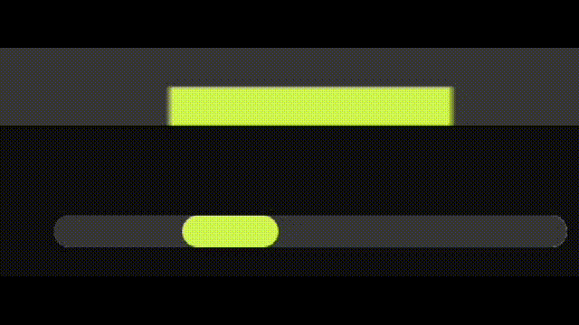

Шаг 1. Нажмите "Начать Игру", чтобы начать игру. (Зажимать не надо)
Шаг 2. Изучите управление игры.
*Цифры сверху - кол-во очков. Каждый раз, когда вы успешно ловите шарик, вам добавляется 1 очко. С каждым очком шарик слегка ускоряется. Очки обнуляются, а скорость спадает до начальной, как только вы пропустите 1 подачу. Это считается за поражение.
*Передвигайте зелёный ползунок снизу, чтобы управлять платформой, которая ловит шарик. Платформа двигается в зависимости от положения ползунка. После проигрыша платформа не меняет местоположение. Также платформа двигается не синхронно, что значительно усложняет игровой процесс.
Шаг 3. Убедитесь, что выполнили шаг 2 правильно. Если вы уверены, что достоверно ознакомлены с управлением, то вы можете переходить к шагу 4.
Шаг 4. Веселитесь!